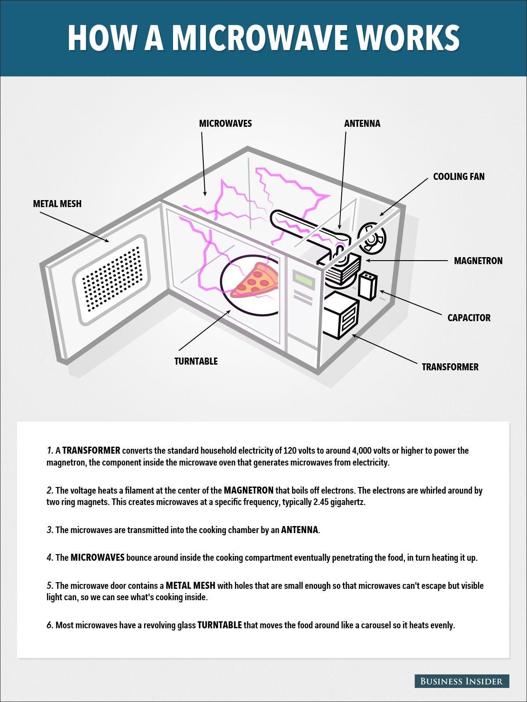

5 Computer System Components
The following points highlight the five main components of a computer:
Input Unit:
This unit transfers the information from outside
to the memory or storage unit by any of the following functions:
- It accepts (or reads) the list of instructions and data from the outside world;
- It converts these instructions and data in computer acceptable format;
- It supplies the converted instructions and data to the computer system for further
processing.
Output Unit:
The job of an output unit is just the reverse of that of
an input unit. It supplied information and results of computation to the outside world.
- It accepts the results produced by the computer which are in coded form and hence cannot be
easily understood by us;
- It converts these coded results to human acceptable (readable) form;
- It supplied the converted results to the outside world.

Memory or Storage Unit:
Memory unit is the amount of data that can be stored in the storage unit.
The specific functions of the storage unit are to store:
- All the data to be processed and the instruction required for processing (received from
input devices);
- Intermediate results of processing;
- Final results of processing before these results are released to an output device.

Central Processing Unit (CPU):
The main unit inside the computer is the CPU.This unit is also called programme
controller and is the most complex unit. It is the nerve centre
because each unit of the computer works under the supervision of this unit.
- It controls all internal and external devices, performs “Arithmetic and Logical
operations”.
- The operations a Microprocessor performs are called “instruction set” of this processor.
- The instruction set is “hard wired” in the CPU and determines the machine language for
the CPU.
- The more complicated the instruction set is, the slower the CPU works. Processors
differed from one another by the instruction set.
Arithmetic and Logic Unit (ALU)
The arithmetic and logic unit (ALU) of a computer system is the place where the
actual execution
of the instructions take place during the processing operations
- The arithmetic and logic unit (ALU) is the part where actual computations take place.
It consists of circuits that perform arithmetic operations.
- While performing these operations the ALU takes data from the temporary
storage are inside the CPU named registers.
- If these results are not needed for the next instruction, they are sent back to the main
memory and registers
are occupied by the new data used in the next instruction.

Control Unit:
-
The control unit directs and controls the activities of the internal and external
devices. It interprets the instructions
fetched into the computer, determines what data, if any, are needed, where it is stored,
where to store the results of the operation,
and sends the control signals to the devices involved in the execution of the
instructions.

Microwave with 5 functional parts

- Input The input of a microwave is what is the user programs or puts
inside the microwave.
- Output The Output of the microwave is the sound that the is made to
alert the user that the process is complete.
- Memory A microwave oven according to the invention have one-chip
microprocessors including a ROM, a RAM and an I/O port.
In the ROM a permanent program for controlling the RAM, a data input unit and a display
unit is stored.
- Processor A microprocessor, a scaled-down, single-circuit computer
chip, regulates the functions of the oven.
- Control Unit A microwave controller is a feedback temperature
controller for controlling product temperatures during microwave, heating by cycling the
magnetron on and off.
How the Internet Works

Ever wonder how the Internet works? You won’t believe how simple it is. The Internet is a global computer network for communication – actually nothing more than a basic computer network. The Internet simply moves data from one place to another, so that we can chat, browse and share.
Data moves over the Internet in a manner called “packet switching.” What packet switching basically does is send your data in separate pieces – each tagged with your intended destination. Once all of the pieces reach their target, they are reassembled into – voila! – your email. Packets flow by many routes, each determined by the quickest and most efficient at the time you send your email.
If you had a permanent connection to the intended destination or if your email traveled as a whole instead of in pieces, an entire portion of the network would be blocked every time you sent a message. With packet switching, many people can use the Internet at the same time.
There are millions upon millions of servers on the Internet. Servers store information. There are file servers, mail servers and web servers. The Internet is also made up of routers. Routers simply make connections between different systems. For instance, at work or school, where several computers are networked, you are connected to one router – a single point of entry for the Internet.
Choosing a Computer for doing digital music and video editing
Dell XPS 15 9510 (2021)
- Total Storage Capacity: 256 GB
- Video card: GeForce RTX 3050 Mobile 4GB
- RAM: 16 GB
- Audio card: Realtek ALC3281-CG
- Operating System: Windows 10 Home
- Processor Type: Intel Core i5 11400H
- Screen Size: 15.6 inch
- Price: $1299
Apple MacBook Pro 16 (2021)
- Total Storage Capacity: 512 GB
- Video card: Apple M1 Pro GPU (16-core)
- RAM: 16 GB
- Audio card: High-fidelity six-speaker
- Operating System: macOS
- Processor Type: M1 Pro
- Screen Size: 16.2-inch
- Price: $2499.99
- If we compare the characteristics of these two laptops,
I would definitely recommend to Choose Apple MacBook Pro 16 (2021).
It has many advantages and benefits, such as:
- Higher refresh rate: 120 vs 60 Hz in Dell;
- The video card shows an average of 32-44% more FPS;
- Comes with a 14Wh larger battery (100 and 86Wh);
- Best quality webcam video recording. Amazing quality audio when playing music or video with Dolby Atmos on built-in speakers.
And studio-quality three-mic array with high signal-to-noise ratio and directional beamforming.
- But the biggest disadvantage of the MacBook is the price.
- And if the price is the big problem, so Dell XPS 15 9510 (2021) is a good choice too.
And he also has a number of advantages, such as:
- Slightly lighter - weighs 180 grams less (1.92 and 2.1 kg);
- Thinner bezels - 3% more screen real estate;
- Touch screen;
- Upgradeable RAM (up to 64 GB) and SSD;
- More compact - has a 10% smaller body area (793 and 882 cm 2 ).